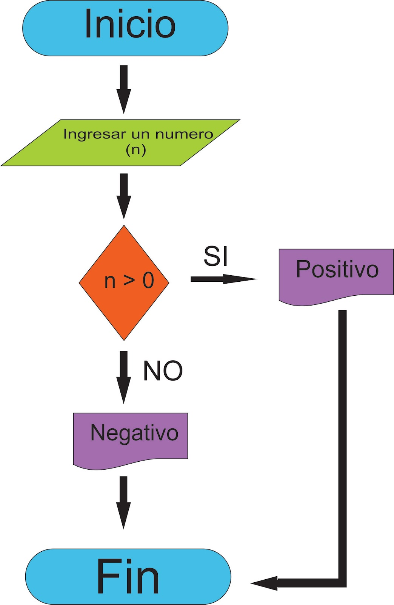

FACTORES QUE HAN INTERVENIDO EN EL DESARROLLO DE LA INTELIGENCIA ARTIFICIAL
Prueba de como la IA puede ganar al hombre
- Big Data
- Entorno tecnol�gico
- Avance en algoritmos
| Big Data | Entorno tecnol�gico | Avance en algoritmos |
|---|---|---|
| Es un t�rmino evolutivo que describe cualquier cantidad voluminosa de datos estructurados, semiestructurados y no estructurados que tienen el potencial de ser extra�dos para obtener informaci�n | Suma total de un conocimiento que tiene una forma de hacer las cosas, es decir, como se dise�an, como se producen, distribuyen y se venden los bienes o servicios | Conjunto ordenado de operaciones sistem�ticas que permite hacer un c�lculo y hallar la soluci�n de un tipo de problemas |
|  |